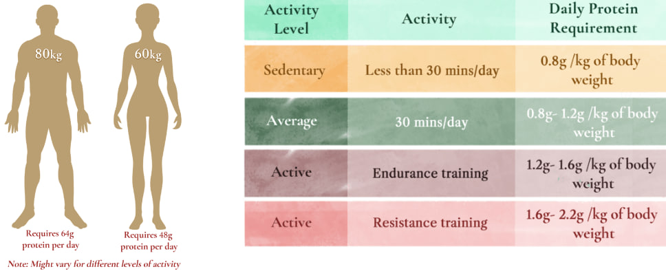

In simple terms, holistic nutrition is about eating for your mind, body, and soul. It’s a natural and comprehensive approach to eating that’s designed for a person's individual health and well-being. Eating healthy is easy when you approach it with a holistic view—considering all aspects, such as your mind, emotions, education, community, and environment. You don't have to get divorced, move to another country, or make new friends before you can achieve and maintain your ideal weight. But, to find the ideal diet, you need to include all aspects of holistic nutrition. Many people work with a trained holistic nutrition coach who provides professional advice and tailored meal plans that promote healthy habits and bring balance to your entire being—not just the physical. Following a holistic diet and lifestyle not only improves your well-being, but can also prevent health conditions and fatal diseases like cancer, osteoporosis and heart disease.
Holistic nutrition is a way of eating that deeply respects the relationship between our diet, our health, and the environment. This approach prioritizes foods that are in harmony with nature and avoid causing harm to other living beings. It's about choosing nourishment that supports and nurtures your body.
How can you apply it in your daily life?
Well, holistic nutrition is a plant-based diet, with at least 85% of the diet comprising plant sources. The remaining 15% can include animal products like eggs or organic dairy. However, research suggests that for most people, consuming meat, fish, eggs, and dairy isn't necessary. Let's take a look at how much protein a person actually needs. So, to make use of this information, you need to create a diet that benefits yourself based on the guidance provided.

The Benefits of a Holistic Diet
Prevents Diseases (Complementing medical treatment)